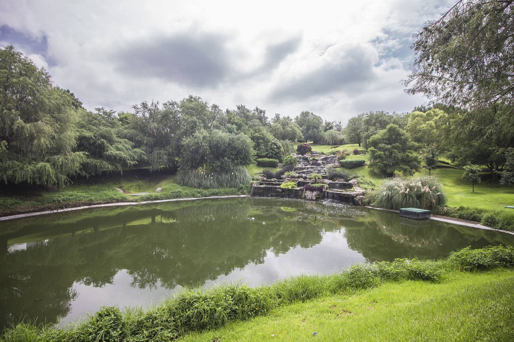
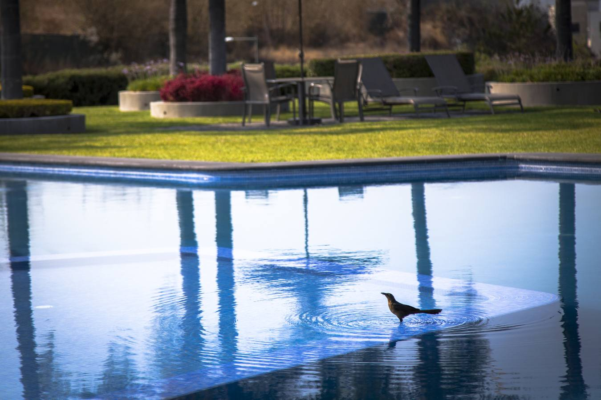
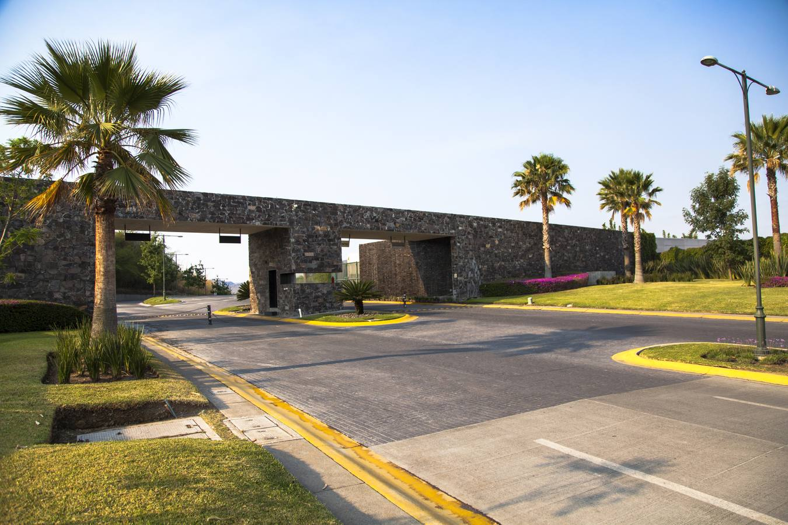
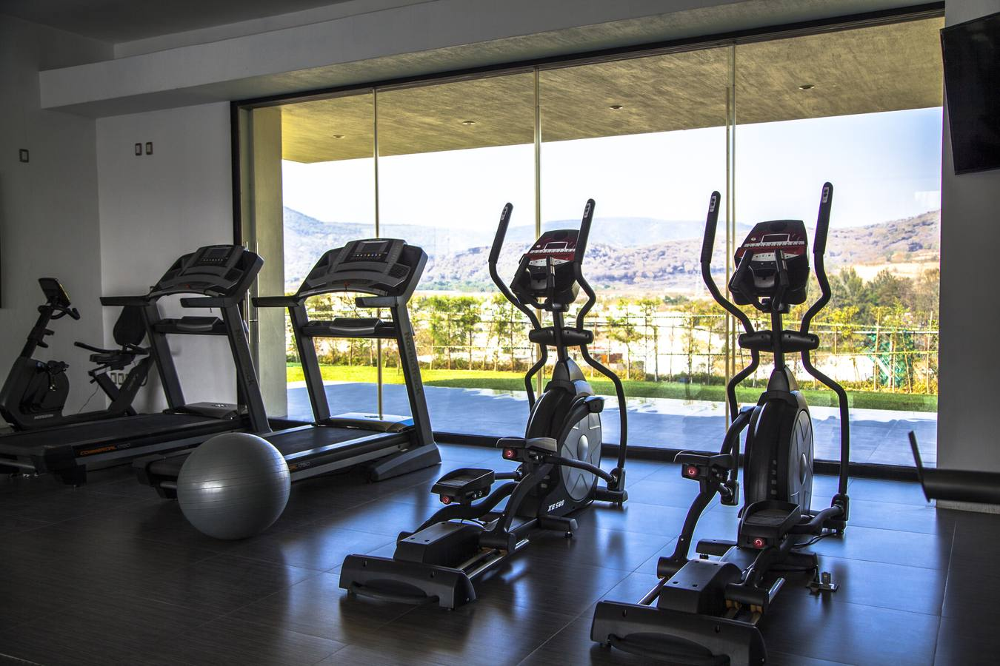
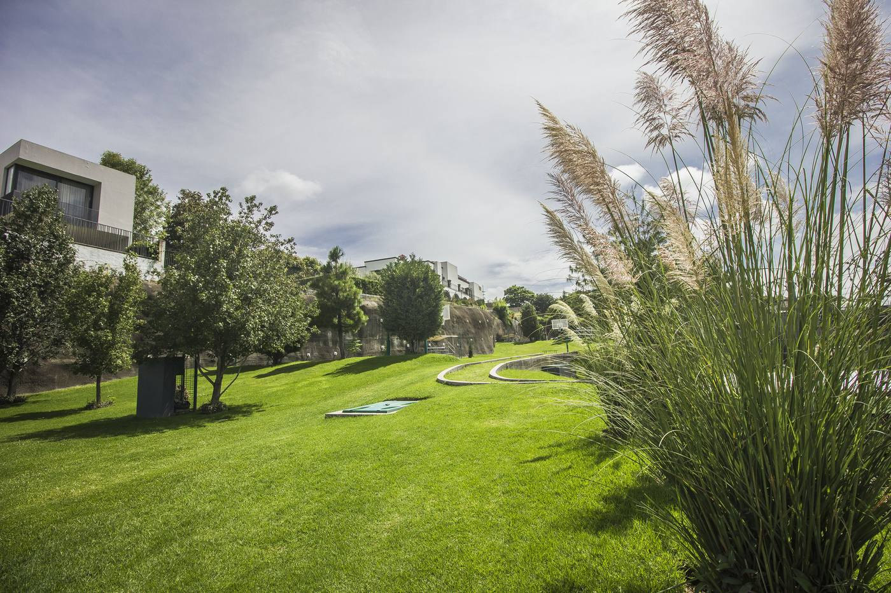

Ciudad de México Zapopan
Terrenos desde 448 m² en Los Sueños Residencial, un coto privado con lago, casa club y amenidades deportivas junto al Bosque de la Primavera. Desde $8 MDP, con escrituración inmediata.
La diferencia de precio es la razón por la que muchas familias de la capital están construyendo en Zapopan en lugar de comprar departamento.
Polanco, Santa Fe, Roma Norte
+$60,000
por m², precio promedio de la zona
Departamento en edificio, sin jardín propio.
Los Sueños Residencial, Zapopan
$17,471
por m² de terreno, desde (contado)
Tu propio predio de 448 a 612 m² en coto privado, para construir tu casa a tu medida.
El precio de CDMX es un promedio de mercado de vivienda en esas colonias; el de Los Sueños es precio de contado por m² de terreno, vigente a septiembre de 2026. A esto se suma el costo de construcción de tu casa.
En lugar de metros de departamento, un terreno donde tu casa tiene jardín, y a unos pasos un lago, más de 50,000 m² de áreas verdes y el Bosque de la Primavera.
Vuelos diarios entre Guadalajara y la Ciudad de México, de poco más de una hora, para quienes siguen trabajando o viajando a la capital.
El poniente de Zapopan, sobre Prolongación Av. Vallarta, conecta con Ciudad Granja, Valle Real y el Periférico Poniente, y es una de las zonas de mayor plusvalía de la ciudad.
Pádel, simulador de golf, fútbol rápido, pumptrack, alberca, gimnasio y casa club dentro del mismo residencial, con vigilancia 24/7 y acceso controlado.





UNO Brokers tiene atención en Santa Fe y Bosque Real, así que empiezas el proceso desde la capital.
"Cada vez nos escriben más familias de la Ciudad de México que ya decidieron mudarse. Lo que más les pesa es poder construir su casa con jardín a un precio que en la capital ya no encuentran." — UNO Brokers
Para muchas familias sí: Zapopan ofrece cotos privados con áreas verdes, menor costo por metro cuadrado que las zonas premium de CDMX y conexión aérea frecuente con la capital. En Los Sueños Residencial puedes comprar un terreno desde 448 m² y construir tu casa a tu medida.
Sí. UNO Brokers atiende en Santa Fe y Bosque Real, te envía disponibilidad y planos por WhatsApp, y coordina el recorrido en Zapopan y la escrituración para que viajes lo menos posible.
Los terrenos van desde $8 MDP de contado, con superficies de 448 a 612 m² en categorías A, AA, AAA y Diamante. También hay crédito directo del desarrollo y crédito bancario.
Sobre Prolongación Avenida Vallarta, en la zona de El Bajío, Zapopan, junto al Bosque de la Primavera y cerca de Ciudad Granja, Valle Real y el Periférico Poniente.
La escrituración es inmediata mediante fideicomiso. Los lotes cuentan con servicios y puedes iniciar tu proyecto una vez firmada la escritura, siguiendo los lineamientos del régimen de condominio.
Escríbenos desde CDMX y te mandamos la disponibilidad de hoy.